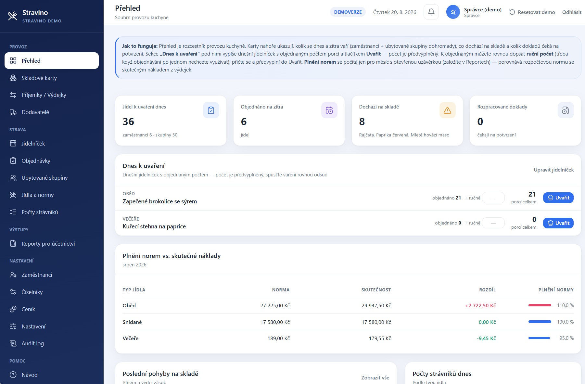

Profesionální systém pro kompletní provoz stravování.
Od skladu a receptur přes jídelníčky a objednávky až po výdej, náklady a uzávěrky. Stravino řeší celý provoz kuchyně v jednom systému.
Objednání systému na telefonu +420 775 370 101

Propracovaný systém
Objednávky, jídelníček, sklad i výdej v jednom.
Pod jednoduchým ovládáním je propracovaný systém — sklad s FIFO oceňováním, receptury s automatickým odpisem surovin, nákladové normy i uzávěrky. Žádná odlehčená appka na objednávky, ale kompletní nástroj pro provoz kuchyně.
Objednávky stravy
Strávník si sám objedná čipem u výdeje nebo z mobilu, klidně na dva týdny dopředu — bez volání do kuchyně a bez papírků na dveřích.
Správa jídelníčku
Jídelníček naplánujete na týdny dopředu a hromadně zveřejníte strávníkům jedním kliknutím — s alergeny u každého jídla.
Výdejní terminály
Dotykový kiosk u jídelny — strávník přiloží RFID čip a objedná oběd na dva týdny dopředu, bez přihlašování. Po chvíli nečinnosti se sám odhlásí, ať zůstane identita v bezpečí na sdíleném zařízení.
Přehledy a administrativa
Sklad s FIFO oceňováním, receptury i dodavatelé, počty strávníků, nákladové normy porovnané se skutečností a měsíční uzávěrka s exportem do XLSX a PDF pro účetnictví. Role pro strávníka, kuchyni i správce, ke všemu auditní log — kdo co v systému změnil a kdy.
Do detailu
Nejen objednávky.
Kompletní provoz kuchyně.
Stravino pokrývá i provozní detaily, které v jednodušších systémech chybí.
Sklad a FIFO
Příjemky, výdejky, převodky, inventura. Oceňování metodou FIFO, hlídání minimálních zásob a expirace surovin.
Receptury a „vaření"
Ke každému jídlu receptura, i s polotovary. Klik na „uvařit" a systém sám odepíše suroviny podle skutečného počtu porcí.
Ubytované skupiny
Hromadné zadání snídaní, obědů i večeří na celý pobyt najednou — bez objednávání po jednom.
Alergeny
Automaticky odvozené z receptury, i přes polotovary. 14 alergenů dle vyhlášky, žádné ruční dopisování.
Nákladové normy
Porovnání rozpočtové normy se skutečným nákladem z výdejek — hned vidíte, jestli se vaří v rozpočtu.
Měsíční uzávěrka
Export do XLSX a PDF pro účetnictví na pár kliků, místo ručního sčítání na konci měsíce.
Role a audit log
Přihlašování přes Keycloak (strávník / kuchyně / správce), audit log každé změny v systému.
Nastavení bez programátora
Provozní parametry (lhůta uzávěrky, měna…) se mění přímo v administraci, ne v kódu.
Jak to funguje
Od jídelníčku po uzávěrku, ve čtyřech krocích
Vytvoříte jídelníček
Naplánujete jídla na týdny dopředu a hromadně je zveřejníte strávníkům.
Uživatel objedná
Strávník si vybere jídlo čipem u výdeje nebo z mobilu, klidně týdny dopředu.
Kuchyně získá přehled
Denní rozcestník s počty porcí podle receptury — a rovnou z něj spustí vaření.
Uzavřete měsíc
Norma vs. skutečnost na jeden pohled, export uzávěrky pro účetnictví.
Pro koho je Stravino
Pro každý provoz s vlastní kuchyní
Kdekoli se dnes vaří podle papírové evidence, staré DOS aplikace nebo Excelu.
Firmy
Interní stravování zaměstnanců.
Školní jídelny
Školy a školská zařízení.
Zdravotnická zařízení
Nemocnice, léčebny a ambulantní provozy.
Domovy a sociální služby
Pobytová zařízení a domovy pro seniory.
Závodní stravování
Provozní a průmyslové kantýny.
Výhody
Méně papírování, víc přehledu
Méně ruční administrativy
Objednávky, sklad i uzávěrka bez přepisování do Excelu nebo na papír.
Aktuální počty objednávek
Kuchyně vidí v reálném čase, kolik porcí se dnes objednalo.
Přehled pro kuchyň
Denní rozcestník s předvyplněnými počty porcí podle receptury.
Jednoduché ovládání pro strávníky
Objednání během pár vteřin — čipem u výdeje nebo z mobilu.
Centrální správa
Sklad, jídelníček i objednávky spravujete z jedné administrace.
Přístup z PC i telefonu
Responzivní web funguje na počítači, tabletu i mobilu.
Integrace a technologie
Ověřený stack, otevřené API
Aktivně vyvíjené technologie, které za pár let neskončí bez podpory — a poběží stejně na malém serveru jedné kuchyně i na provozu s více terminály.
PostgreSQL
Databáze — trezor na všechna data, transakčně spolehlivá.
FastAPI (Python)
Backend a API — rychlé, moderní, samo si generuje dokumentaci.
React + TypeScript
Rozhraní v prohlížeči — přehledné, funguje i na mobilu a tabletu.
Keycloak
Přihlašování a role — standard OpenID Connect, umí SSO s Active Directory.
Redis + Celery
Úlohy na pozadí — export uzávěrky, hlídání expirací, appka nikdy nečeká.
Docker + Nginx
Nasazení na jednom virtuálním serveru (VM), HTTPS, jedním příkazem.
Moderní webová aplikace
Stravino běží přímo v prohlížeči — žádná instalace na jednotlivé stanice, žádný tlustý klient. Funguje stejně na počítači, tabletu i mobilu, přihlásíte se jen e-mailem a heslem.
Nasazení: jeden server, Docker, hotovo
Web, administrace, kiosk terminál, databáze i úlohy na pozadí — všechno v Docker kontejnerech na jediném virtuálním serveru. Žádný cluster, žádná databázová farma. Nasazení i aktualizace jedním příkazem, HTTPS přes reverzní proxy Nginx.
Ceník
Jedno předplatné, žádné skryté položky
Vždy on-premise — systém běží na vašem serveru, žádný hosting u nás.
Stravino — kompletní systém
7 900 Kč / měsíc
bez DPH · všechny funkce, aktualizace a provoz systému v ceně
- Sklad, receptury a jídelníček
- Objednávky čipem i přes web
- Ubytované skupiny a alergeny
- Nákladové normy, reporty a měsíční uzávěrka
- Aktualizace a technická podpora
Jednorázově k tomu Implementace a spuštění systému — 24 000 Kč: konfigurace provozu, založení uživatelů a rolí, nastavení jídelny, import počátečních dat, zprovoznění terminálu a čipů, základní školení a pomoc při ostrém spuštění. Nasazení je vždy on-premise na serveru vašeho provozu. Úpravy a integrace nad rámec základu (Active Directory, napojení na účetní systém, další terminály a provozovny) řešíme individuálně, dle dohody.
Kdo za tím stojí
Dominik Kulich
IT specialista a bezpečnostní konzultant zaměřený na modernizaci firemního IT — servery, sítě, kybernetickou bezpečnost (Wazuh SIEM, FortiGate) a Microsoft 365. Stravino vzniklo jako odpověď na to, co v terénu vídám často: kuchyně, které pořád jedou na programech z devadesátek, v Excelu nebo na papíře.
dominikkulich.czKontakt
Máte zájem?
Napište pár vět o vašem provozu — ozvu se s nabídkou na míru.
Přímý kontakt
dominik.kulich@email.cz +420 775 370 101 dominikkulich.czBezpečnost, GDPR a data řešíme stejně vážně jako samotný sklad — hesla jen kryptograficky, audit log každé změny, připraveno na monitoring (Zabbix) a bezpečnostní dohled (Wazuh).